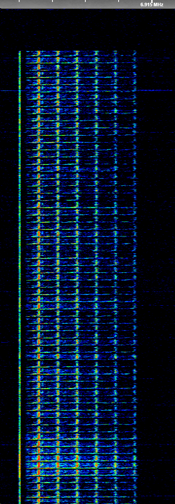

6911 Southern Musical Network
| Name | 6911 South Musical Network |
| Frequencies | 6828, 6911, 7546, 7649, 9310 |
| Status | Active |
| Voice | - |
| Emission mode | J3E (USB) |
| Location |
South Russia (Rostov-Tambov region)
|
| Activity pages | 2024 2025 2026 |

6911 Siren activity taken on 23.10.2026
This network was first heard from that site in 2023 (6828, 7546, 7649, 9310). The first appearance of 6911 was in 2024. 6911 returned to the site after 14th August 2025, transmitting rarely. Presumably it's located somewhere in the Southern Military District. Firstly, when 6911 transmitted from here, it didn't have any carrier. During the marker playing, it had some kind of hum leaks and stuff. On 25th September, the marker was officially turned off. On 26th September, the site gave out CIS-12 on 6911, first time recorded most likely. After that, the two sites completely separated from each other.
It only gave out Russian ЛЮБЕ Anthem at 0600z, 1300z and 1800z on Mondays, Tuesdays, Fridays. It had rare siren traffic during 22nd September 2025, December 2025, 16th February 2026, and 6th April 2026. On 28th August 2026, it started giving normal siren traffic like it was.
The whole network activated from dead during September 7th 2026. 6828, 6911, 7546, 7649, 9310 activated with their own traffic. On 9th September, after almost a whole year, the metronome marker came back for 15 minutes.
- In 2023: 6828, 7546, 7649, 9310 moved from Moscow.
- In 2024: 6911 experiments
- From 2025: Changed sites, rare activities.
- From 2026: After long break normal traffic like in 2025.
One of the weirdest sites yet...